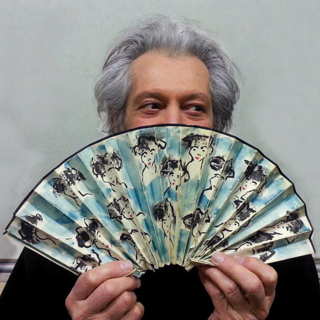
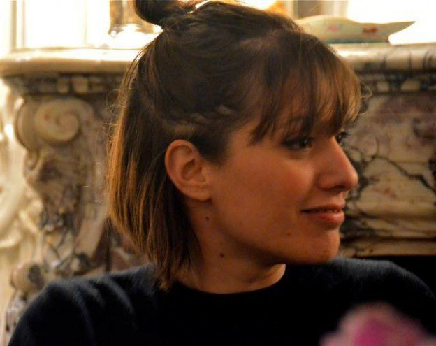
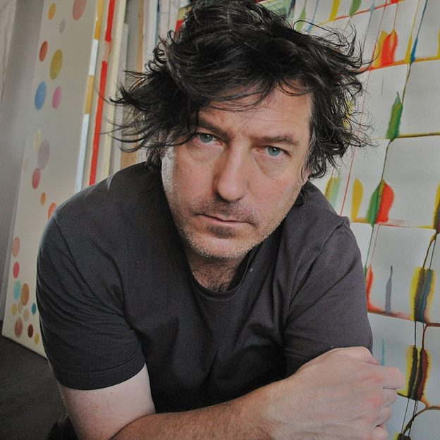
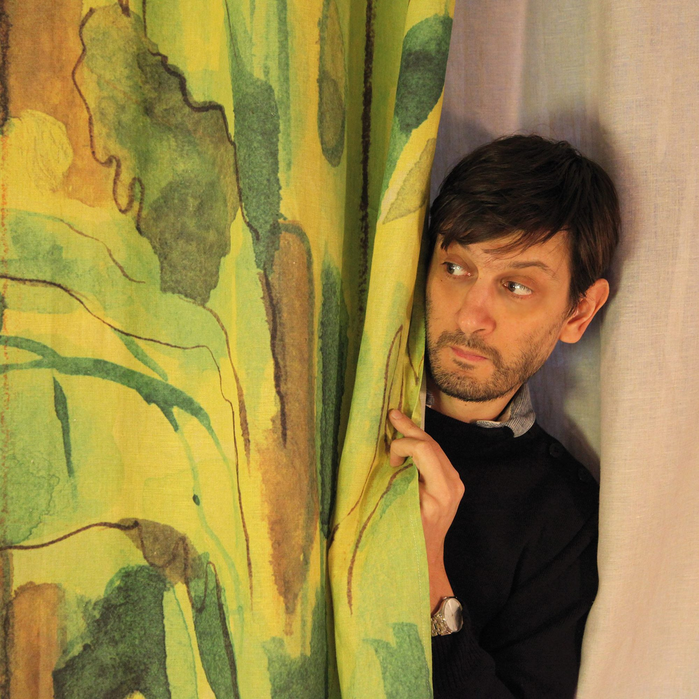

Just two years ago, the Maison Lévy textile collection simply captured me during a visit to Maison & Object in Paris. The beautiful artistry of each pattern and the journey from iconic Parisian scenes to all that a single cup of coffee represents was nothing short of inspiring and it is now one that I am so pleased to share with you.
As we welcome the full collection to the United States for the first time, exclusively available through the Robin Thomas Design Gallery, allow me to officially introduce you to the line and the talented artists and visionaries behind it.
Who Are They?
Maison Lévy is more than a brand, it is a family business, run by mother and daughter, and inspired by their husband and father’s artistic work! A multi-faceted team with different ideas and diverse inspirations; in other words, Geneviéve Lévy, Nina Bonomo, the artists’ works and the production team, who work from day to day to bring you objects that exceed your highest expectations.
But especially Geneviéve Lévy who knew how to infect others with her passion for the infinitely small – the detail – to the infinitely big – landscapes. The idea for these objects of escape sprouted from Haby Bonomo’s paintings and through these, the objects were born.
It is through ongoing, daily dialogue between two close and complementary sensibilities that the Maison Lévy collections are created, always with the renewed pleasure of the desire to take Haby and Nina’s artistic work, which are the preferred aid of our creations, even further.
Teamwork
Since the company’s founding in 2006, they’ve continued on with their initial choice of designing products 100% French.
Their collaborators are more than partners to us. As companies labeled “enterprise du parimoine vivant français” (Living heritage company label), they benefit from their “savoir faire” and experience.
They share the taste of exception and the same passion for details, to bring their project higher and satisfy their thirst for creation.

Left: Genevieve Lévy; Right: Nina Bonomo
The Artists Behind the Prints

Haby Bonomo
The paintings and drawings of Haby Bonomo provided the initial inspiration of Maison Lévy – and went on to form the foundation of the collections created. As a renowned architect and painter, Haby’s work offered great breadth of both a talented craftsman and artist – describing himself as a “wandering painter”, largely inspired by his travels along with objects from everyday life. He had lived throughout the world and his life was rich with experience….his art served as a “postcard” of sorts but maintained a level of ambiguity and incompleteness, allowing the viewer to fill in the blanks based on their own experiences. Originally hailing from Argentina, Haby spent a significant portion of his life living and working in Paris.

Nina Bonomo
Nina Bonomo – along with her mother, Geneviève Lévy – founded Paris-based Maison Lévy in 2006. With a background in fashion design, Nina oversees the company’s artistic direction and contributes to the collection using a mixed media of pencils and water colors to express her vision of the world and textile. Nina’s work helps to complete the story of the Maison Lévy collection through her own unique perspective and aesthetic.

Martin Reyna
Martin Reyna, whose work is featured in the Maison Lévy collection, is an Argentinean artist who lives and works in Paris and has exhibited throughout Europe and the United States. He works with conventional media: water colors and oils with an all new methodology.

Manuele Fior
Italian artist Manuele Fior has held the the title of architect, illustrator and – most notably, cartoonist. In addition to contributing to the Maison Lévy collection, Manuele has produced a great number of short comic stories written in collaboration with his brother Daniele, such as “Black,” and “Bile Noir,” and his work has been featured throughout a variety of publications including The New Yorker, Le Monde, Vanity Fair and Rolling Stone Magazine. Today, Manuele lives and works in Paris.
Claudine Coustal
Flowers, fruits, animals and the occasional landscape. Over the years, Claudine’s Coustal’s art, including her work in the Maison Lévy collection, has focused on these core themes. Not as objects to be observed, but more like willingly faded memories – tulips blooming in their rumpled cellophane wrapping, big cats jumping out of an impossible savannah, neoclassic palaces growing under the tropics, while caged birds dream of the clouds. Like a long gone dream, they vanished. Now, they are back.